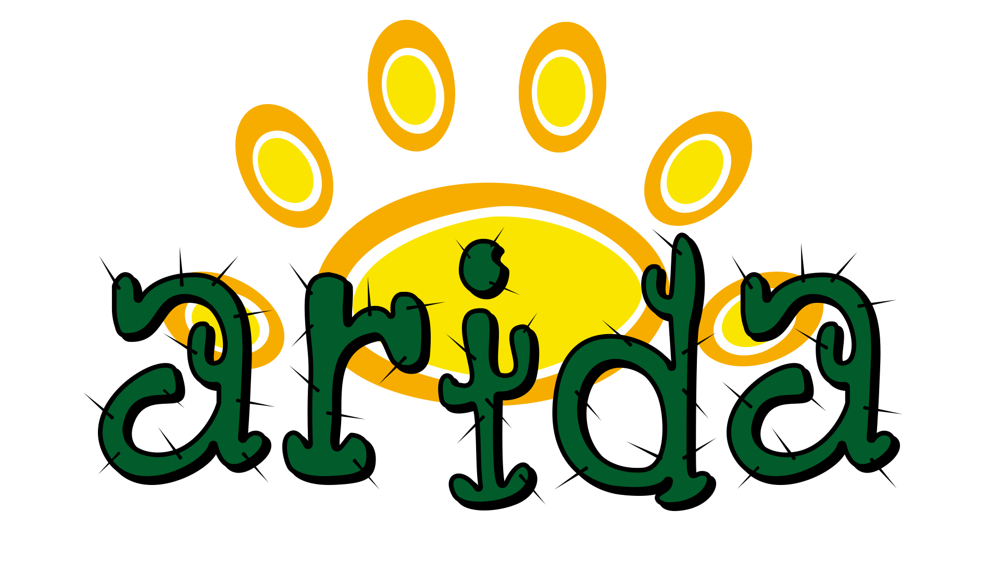

<nav class="navbar navbar-expand-lg navbar-light bg-light navbar-dark bg-dark">
    <a class="navbar-brand" href="{{ url_for('index') }}">
        
    </a>
    <button class="navbar-toggler" type="button" data-toggle="collapse" data-target="#navbarSupportedContent" aria-controls="navbarSupportedContent" aria-expanded="false" aria-label="Toggle navigation">
        <span class="navbar-toggler-icon"></span>
    </button>
    <div class="collapse navbar-collapse" id="navbarNavAltMarkup">
        <ul class="navbar-nav">
            <li class="nav-item">
                <a class="nav-item nav-link active" href="{{ url_for('index') }}">Home <span class="sr-only">(current)</span></a>
            </li>
            <li class="nav-item">
                <a class="nav-item nav-link" href="http://www.arida.ufc.br/site/">Árida Lab</a>
            </li>
            <li class="nav-item">
                <a class="nav-item nav-link" href="https://github.com/AugustoCam95">About Author</a>
            </li>
        </ul>
    </div>
</nav> 


    
    
    